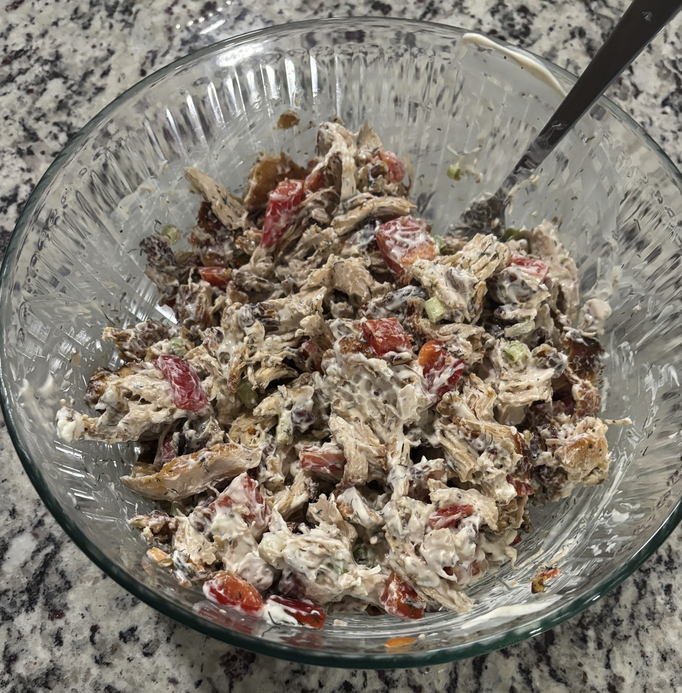

Home
Walnut and Red Pepper Chicken Salad

4 servings
Ingredients
- 3 cups cooked chicken (1-1.5 lbs)
- 1/2 cup walnuts and pecans
- 1/2 red pepper
- 2 tablespoons dill
- Half bunch of green onions
- 1/2 cup mayo
- 2 tablespoons plain greek yogurt
- 1 tablespoons dijon mustard
- 1 teaspoons fresh lemon juice
- Salt and black pepper to taste
- Cucumber slices and shredded carrots mixed in or for dipping
- Bed of mixed greens
Steps
- Spread the walnuts and pecans on a dry pan or baking sheet. Toast at 350 degrees in an oven for 5-8 minutes until fragrant. Let them cool completely then chop them
- In a large mixing bowl combine the shredded/diced chicken, the chopped nuts, chopped red bell pepper, dill, and green onions
- In a seperate small bowl whisk together the mayo, greek yogurt, dijon mustard, and fresh lemon juice for the dressing
- Season the dressing generously with salt and black pepper. Stir well until the dressing is smooth and evenly mixed
- Pour the prepared dressing over the chicken and vegetable mixture in the large bowl. Stir until evenly coated
- Cover the bowl and refridgerate for at least 30min
- Serve on a bed of mixed greens for a salad, on bread with lettuce for a sandwich, or as dip with crackers
- Add anything extra like carrots and cucumbers in the salad, on the sandwhich, or with the dip for dipping